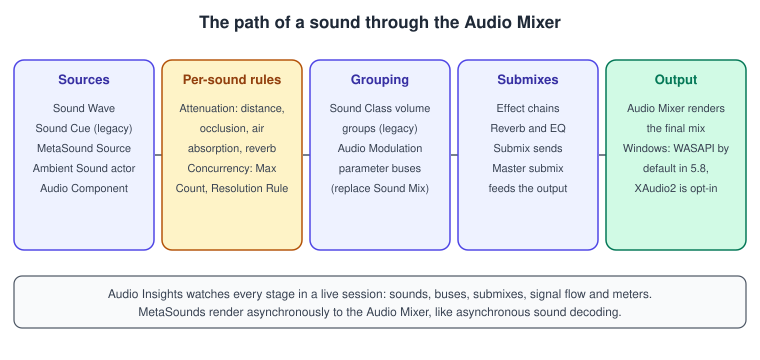
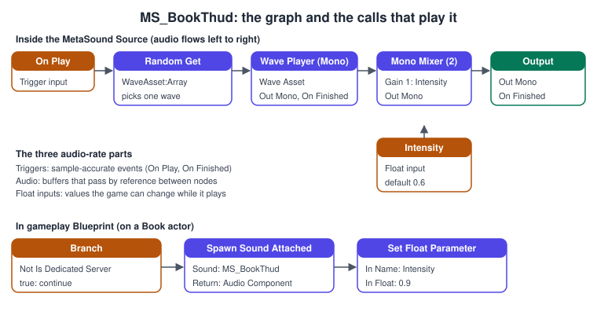
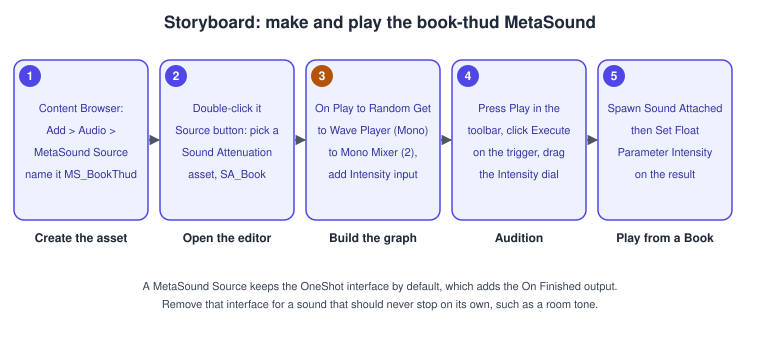

Audio and MetaSounds
|
This content was generated with the assistance of AI and should be verified against the official documentation before being relied on in production. |
Sound is half of what makes a place feel real: the dry knock of a book landing on a board, the page-flip when it is opened, the low murmur of a library at night. Unreal Engine’s audio is built around a multi-platform renderer called the Audio Mixer and three kinds of sound source: plain imported Sound Waves, node-graph Sound Cues (the older design) and MetaSounds (the UE5 design). This page explains the path a sound takes from an asset to the speakers, how Sound Cues and MetaSounds differ and why new work should start with MetaSounds, and how attenuation, concurrency and submixes shape what the player hears.
The facts on this page were checked in November 2026 against the Unreal Engine 5.8 documentation (5.8 was released on 2026-06-17, and the latest hotfix found is 5.8.4). Audio works on every platform the engine targets; on Windows the default output backend changed in 5.8 from XAudio2 to WASAPI. The running example is the Bookshelf’s sound step: a MS_BookThud MetaSound plays when ABookActor lands, with an Intensity parameter set by the impact, and a persistent room tone follows how many librarians are in L_Library. The page assumes the Actors and Components basics; the engine-neutral theory of listeners, attenuation and panning is in Physics, Audio and Input Basics, and Unity’s counterpart is Audio (Unity).
The audio engine and the path of a sound

The Audio Mixer is Unreal’s multi-platform audio renderer, first used in Fortnite and added in UE 4.24. It sums every playing source after processing it through parameters and effects, including submixing and master effects. Epic describes the rest of audio as layers on top of it:
-
Sound sources: what makes samples. A Sound Wave is an imported audio file; a Sound Cue is a legacy graph of nodes that controls volume and pitch; a MetaSound is a digital-signal-processing (DSP) graph.
-
Per-sound rules: attenuation (how the sound changes with distance and position) and concurrency (how many copies may play).
-
Grouping: Sound Classes and Sound Mixes are the older way to give groups of sounds shared volume and to change it at run time; the Audio Modulation plugin replaces their static parameters with generic parameter buses that any source can drive and any destination can receive.
-
Submixes: the routing and effects layer. A submix is a DSP graph that keeps running even when nothing is sent to it, the audio engine creates a master submix when it initialises, and effects are added through submix effect chains.
-
Output: the Audio Mixer renders the final mix for the platform’s audio device.
Three more systems are named by Epic: Quartz (sample-accurate scheduling of sounds from Blueprint, with timing events sent back to gameplay logic), Audio Analysis (real-time and offline analysis that works with Niagara and Blueprint) and Audio Insights (profiling, described below).
Source: Audio in Unreal Engine 5 and Audio Mixer Overview
Choosing a sound source
A Sound Wave alone is enough when one recording plays unchanged. For anything with variation, layers, randomness, or parameters that the game changes while it plays, Epic’s current guidance is the MetaSound: the overview says MetaSounds have feature parity with Sound Cues and are meant to replace them as the default audio object, while Sound Cues remain supported for projects that already use them.
Sound Cues
A Sound Cue is a node graph that stores references to Sound Waves and instructions for processing audio as it moves through the graph. It is built left to right: playback nodes first, control nodes in the middle, and the Output node last.
| Node | Purpose |
|---|---|
Wave Player, Wave Param |
Bring a Sound Wave into the graph; Wave Param lets the game supply the wave. |
Modulator |
Randomises volume and pitch within a minimum and maximum. |
Random |
Plays one of its connected inputs at random. |
Mixer |
Sets a separate volume for each concurrent input. |
Looping, Delay, Concatenator, Oscillator |
Repetition, timing, sequencing and continuous modulation. |
Crossfade by Distance |
Blends inputs by listener distance; unlike the Attenuation node, a sound plays only within its range. |
Attenuation |
Applies distance volume, either from a Sound Attenuation asset or from settings entered with Override Attenuation. Without it a Sound Cue is not localised and plays at its set volume. |
The limitation is the one Epic names: Sound Cues do not give sample-accurate control, so they suit the "pick a wave, randomise pitch, play" job and little more.
Source: Sound Cue Reference and Sound Cue Editor
MetaSounds
A MetaSound is a high-performance audio system that gives audio designers control over a DSP graph for generating sound sources. Epic describes it as a fully procedural audio engine: where a Sound Cue arranges and modifies recordings, a MetaSound renders audio, so it can synthesise sound at run time, mix it with recorded sources and react to game data. Each MetaSound is its own rendering engine, with a possibly independent sample rate, buffer size and channel count.
Source, Patch, Preset
-
A MetaSound Source is the playable asset: only Sources can generate audio on their own.
-
A MetaSound Patch has the same editor but is meant to be referenced by other MetaSounds, to encapsulate and reuse functionality (a randomised footstep section used by many Sources).
-
A Preset references a base graph (Source or Patch), keeps it read-only and overrides only the default input values. A change to the base graph reaches every preset. Right-click an asset and choose Create MetaSound Preset; Convert From Preset turns one into an ordinary MetaSound. The Bookshelf can ship one thud graph and presets for a heavy tome and a paperback.
Graph elements
| Element | What it is |
|---|---|
Triggers |
Pulses that start things, from gameplay, from nodes or from the graph itself. They execute sample-accurately: at 48,000 samples per second the timing resolution is about 0.02 milliseconds. |
Inputs |
User parameters, like those of a Material or a Niagara system. Many node parameters can be modulated at audio rate. The game sets them by name. |
Interfaces |
Named bundles of inputs and outputs. |
Pin types |
Trigger, Audio, Time, String, UObject, Bool, Float, Int32 and Enum, each with an array variant. A wave asset is a UObject reference (a |
Variables |
Get, Get Delayed (reads one block late, to avoid cycles) and Set nodes. A variable change is not registered during playback and Blueprints cannot reach variables, so use inputs for anything the game changes. |
Output format |
Mono, Stereo, Quad (4.0), 5.1 or 7.1, chosen with the MetaSound toolbar button. |
Graph composition |
MetaSounds can be used inside other MetaSounds. Custom nodes written with the C++ Node API define inputs, outputs, a tooltip and versioning. |
The node library includes the Wave Player (seeking, loop points, sample-accurate concatenation so the next queued wave starts without a gap, pitch-scale modulation and cue-point reading), trigger utilities, DSP maths, filters, dynamics processing, spatialisation and synthesis generators. Performance follows from the design: a MetaSound renders asynchronously to the main Audio Mixer, using the same architecture as asynchronous sound decoding; each graph compiles to an optimised static, non-virtual C++ object, and data passes between nodes by reference, so there are no copies, no bytecode interpretation and no virtual-call overhead.

Sound Cue or MetaSound?
| Aspect | Sound Cue | MetaSound |
|---|---|---|
Model |
Arranges and modifies recordings |
Renders a DSP graph, can synthesise |
Timing |
No sample-accurate control |
Sample-accurate triggers |
Parameters |
Wave Param and a few node settings |
Typed inputs (trigger, float, int, bool, wave, and more) set by name |
Reuse |
Copy the cue |
Presets, Patches and graph composition |
Extension |
Fixed node set |
Custom nodes through the C++ Node API |
Pages, templates and the Builder API (5.8)
MetaSound Pages are variations of a MetaSound for different hardware performance levels: a page can define different input values or a whole different graph, and pages are chosen by platform or by run-time logic, not one to one with platforms. The full-quality graph is the baseline and lighter page graphs serve low-end targets; if a page is not implemented for the active platform the MetaSound falls back to the next lower page that exists, or to the default. Pages are set in Edit > Project Settings > Engine > MetaSounds > Pages (Experimental), the console variable au.MetaSound.Pages.SetTarget selects a page, and Epic’s page labels the feature Experimental, with a caution about shipping with it. MetaSound Templates (Experimental in 5.8) let a programmer define a C++ struct that generates a MetaSound graph, and MetaSound Node Configuration (Experimental) reduces node boilerplate. The MetaSound Builder API authors MetaSounds procedurally from Blueprint. WaveTables add a wavetable synthesis system.
Playing sounds from gameplay
There are four ways to start a sound, from the least to the most control:
-
Ambient Sound actor: a placeable actor that plays a Sound Wave or Sound Cue (and is created automatically when you drag one into the level). Settings include Auto Activate, Sound, an attenuation section with Allow Spatialization, Override Attenuation and Attenuation Settings (a Sound Attenuation asset is recommended for shared control), Priority and Play Multiple Instances. Use it for fixed sources in the level.
-
Play Sound 2D and Play Sound at Location (
UGameplayStatics::PlaySound2D,PlaySoundAtLocation): fire and forget, with no handle. -
Spawn Sound 2D, Spawn Sound at Location and Spawn Sound Attached: return a
UAudioComponentthat you can set parameters on, stop and fade. -
Audio Component: a component placed on an actor, which owns its playback.
Parameters reach a MetaSound through the Audio Component’s parameter interface: SetFloatParameter(Name, Value) (the Set Float Parameter node), SetTriggerParameter(Name) (Execute Trigger Parameter) and the equivalents for integers and booleans. The name is the input’s name in the graph, so a typo is a silent no-op. A trigger parameter is not cached: SetTriggerParameter only has an effect if the sound is already playing. If the very first buffer must already carry a value, put an Audio Component on the actor, set the parameter and then call Play, instead of setting it right after a spawn.
ABookActor: a thud with an Intensity parameter
// BookActor.h (the parts that matter for audio)
#pragma once
#include "CoreMinimal.h"
#include "GameFramework/Actor.h"
#include "BookActor.generated.h"
class USoundAttenuation;
class USoundBase;
class USoundConcurrency;
UCLASS()
class BOOKSHELF_API ABookActor : public AActor
{
GENERATED_BODY()
public:
/** Plays the landing sound at the book; Intensity is 0..1 and drives the MetaSound input of the same name. */
UFUNCTION(BlueprintCallable, Category = "Audio")
void PlayThud(float Intensity) const;
protected:
/** MS_BookThud, a MetaSound Source with a float input named Intensity. */
UPROPERTY(EditDefaultsOnly, Category = "Audio")
TObjectPtr<USoundBase> ThudSound;
/** SA_Book: the Sound Attenuation asset shared by all book sounds. */
UPROPERTY(EditDefaultsOnly, Category = "Audio")
TObjectPtr<USoundAttenuation> ThudAttenuation;
/** Limits how many thuds overlap when a whole shelf falls. */
UPROPERTY(EditDefaultsOnly, Category = "Audio")
TObjectPtr<USoundConcurrency> ThudConcurrency;
UPROPERTY(EditDefaultsOnly, Category = "Audio")
FName IntensityParameter = TEXT("Intensity");
};// BookActor.cpp (the parts that matter for audio)
#include "BookActor.h"
#include "Bookshelf.h"
#include "Components/AudioComponent.h"
#include "Kismet/GameplayStatics.h"
#include "Sound/SoundAttenuation.h"
#include "Sound/SoundBase.h"
#include "Sound/SoundConcurrency.h"
void ABookActor::PlayThud(float Intensity) const
{
// A dedicated server has no audio device and no listener: skip the work.
if (IsNetMode(NM_DedicatedServer) || !ThudSound)
{
return;
}
UAudioComponent* Audio = UGameplayStatics::SpawnSoundAtLocation(
this, ThudSound, GetActorLocation(), FRotator::ZeroRotator,
/*VolumeMultiplier*/ 1.0f, /*PitchMultiplier*/ 1.0f, /*StartTime*/ 0.0f,
ThudAttenuation, ThudConcurrency, /*bAutoDestroy*/ true);
if (!Audio)
{
// Rejected by concurrency or virtualised: not an error.
return;
}
Audio->SetFloatParameter(IntensityParameter, FMath::Clamp(Intensity, 0.0f, 1.0f));
}ALibraryAmbience: a persistent room tone
A room tone is a MetaSound Source with the UE.Source.OneShot interface removed, so it never stops itself, and a float input (Crowd) that raises the murmur. The actor starts it with a fade and updates the parameter when the number of librarians changes.
// LibraryAmbience.h
#pragma once
#include "CoreMinimal.h"
#include "GameFramework/Actor.h"
#include "LibraryAmbience.generated.h"
class UAudioComponent;
class USoundBase;
UCLASS()
class BOOKSHELF_API ALibraryAmbience : public AActor
{
GENERATED_BODY()
public:
ALibraryAmbience();
/** Updates the Crowd input of the room tone (0 empty room, 1 busy). */
UFUNCTION(BlueprintCallable, Category = "Audio")
void SetCrowd(float Crowd01);
protected:
virtual void BeginPlay() override;
/** MS_RoomTone, a persistent MetaSound Source with a float input named Crowd. */
UPROPERTY(EditDefaultsOnly, Category = "Audio")
TObjectPtr<USoundBase> RoomTone;
UPROPERTY(VisibleAnywhere, Category = "Audio")
TObjectPtr<UAudioComponent> AudioComponent;
UPROPERTY(EditDefaultsOnly, Category = "Audio", meta = (ClampMin = "0.0"))
float FadeInSeconds = 2.0f;
};// LibraryAmbience.cpp
#include "LibraryAmbience.h"
#include "Components/AudioComponent.h"
#include "Sound/SoundBase.h"
ALibraryAmbience::ALibraryAmbience()
{
AudioComponent = CreateDefaultSubobject<UAudioComponent>(TEXT("AudioComponent"));
SetRootComponent(AudioComponent);
AudioComponent->bAutoActivate = false; // started with a fade in BeginPlay
}
void ALibraryAmbience::BeginPlay()
{
Super::BeginPlay();
if (RoomTone && !IsNetMode(NM_DedicatedServer))
{
AudioComponent->SetSound(RoomTone);
AudioComponent->FadeIn(FadeInSeconds);
}
}
void ALibraryAmbience::SetCrowd(float Crowd01)
{
if (AudioComponent)
{
AudioComponent->SetFloatParameter(TEXT("Crowd"), FMath::Clamp(Crowd01, 0.0f, 1.0f));
}
}Source: API: UAudioComponent and MetaSounds Reference Guide
Attenuation
Attenuation is how a sound changes with the listener’s position. It is defined once in a Sound Attenuation asset (the Bookshelf’s SA_Book) and hooked up to sounds directly, inside Sound Cues, on Ambient Sound actors, or overridden in Blueprint. The settings fall into groups:
| Group | Settings |
|---|---|
Attenuation (Volume) |
Enable Volume Attenuation; Attenuation Function (Linear, Logarithmic, Inverse, Log Reverse, Natural Sound, Custom); Attenuation Shape (Sphere, Capsule, Box, Cone) with the inner area at full volume (Inner Radius, capsule half height and radius, box extents, cone radius, angle, falloff angle and offset); Falloff Distance, the size of the outer zone. |
Spatialization |
Enable Spatialization (off plays flat 2D); Spatialization Method, Panning (the engine standard, best for speakers) or Binaural (needs a spatialization plugin, best for headphones); Non-Spatialized Radius; 3D Stereo Spread; Normalize 3D Stereo Sounds (a 6 dB reduction to prevent clipping). |
Air Absorption |
Enable Air Absorption, minimum and maximum distance range, low-pass and high-pass cutoff frequencies at both distances, log frequency scaling, and a Linear or Custom absorption method. |
Focus |
Enable Listener Focus, focus and non-focus azimuth, distance, priority and volume scales, interpolation and attack and release speeds. |
Reverb |
Enable Reverb Send; Reverb Send Method (Linear, Custom Curve or Manual) with minimum and maximum send levels and distances. Reverb applies only when a reverb effect is active in the level (a default reverb in World Settings, or an audio volume with a reverb). |
Occlusion |
Enable Occlusion; Occlusion Trace Channel (Visibility by default); Occlusion Low Pass Filter Frequency; Occlusion Volume Attenuation; interpolation time; Use Complex Collision for Occlusion (more accurate, more costly). |
Priority |
Enable Priority Attenuation with a Linear, Custom Curve or Manual method: distance changes a sound’s priority, which concurrency can then use. |
Submix |
Enable Submix Send with a submix, a send method, levels and distances. |
Source Data Override, plugin settings |
Appear when audio plugins that support them are used. |
For the Bookshelf, the thud uses a Sphere shape with a short inner radius and a Logarithmic falloff over about ten metres, occlusion on so that a book falling behind a closed door sounds muffled, and a small reverb send so the library has a room sound. The UE.Attenuation and UE.Spatialization interfaces of a MetaSound expose the resulting Distance, Azimuth and Elevation inside the graph for custom behaviour.
Source: Sound Attenuation and Ambient Sound Actor User Guide
Concurrency, submixes and classes
Concurrency limits how many instances of a sound (or of a group of sounds) play at once, so that a whole shelf of falling books does not become thirty overlapping thuds. A Sound Concurrency asset holds Max Count (all active components count, silent ones included; a Source Bus uses two slots), Limit to Owner (apply the rules per playing actor), a Resolution Rule, Retrigger Time, and volume scaling that ducks older sounds (Volume Scale, Volume Scale Mode, Duck Time, Recover Time, Can Recover), plus Voice Steal Release Time for the fade-out of a stolen voice.
| Resolution Rule | When Max Count is reached |
|---|---|
Prevent New |
The new sound does not start. |
Stop Oldest |
The oldest playing sound stops. |
Stop Farthest Then Prevent New, Stop Farthest Then Oldest |
The farthest sound stops; on a tie, block the new one or stop the oldest. |
Stop Lowest Priority, Stop Lowest Priority Then Prevent New |
The lowest-priority sound stops; on a tie, stop the oldest or block the new one. |
Stop Quietest |
The quietest sound stops. |
Assign a default in Project Settings > Engine > Audio > Default Sound Concurrency, or per source in the asset’s Voice Management > Concurrency > Concurrency Set (a source must satisfy every asset in its set), or with Override Concurrency. Sounds rejected by concurrency ignore virtualization settings.
Submixes route and process audio: a source can send to a submix, a submix has an effect chain (reverb, EQ, compression) and feeds its parent, and the master submix feeds the output. Sound Classes group sounds so that volume, and the default submix, can be changed together (music, effects, voice); Sound Mixes change class parameters at run time. Epic calls Sound Classes and Sound Mixes legacy features that the Audio Mixer still supports, and says Sound Mixes are intended to be replaced by Audio Modulation, whose parameter buses can also drive MetaSound inputs.
Procedure: create and play MS_BookThud

-
In the Content Browser click Add, choose Audio > MetaSound Source and name it
MS_BookThud. -
Double-click it to open the MetaSound Editor. For a 3D sound click Source in the toolbar, open the dropdown beside Attenuation > Attenuation Settings, create a Sound Attenuation asset (for example
SA_Book) and save it. -
Build the graph: drag from the On Play input pin and add Wave Player (Mono), set its Wave Asset; add Random Get (WaveAsset:Array) to choose among several recordings and Mono Mixer (2) to apply a gain. Promote the gain to a graph input named
Intensity(rename inputs in the Details panel under General > Input). Connect the On Finished output of the Wave Player to the graph’s On Finished output. -
Click Play in the editor toolbar. Press the Execute arrow on a trigger input to simulate it and drag the dial on a float input to change it while the sound plays. Save and close.
-
In the Book’s Blueprint use Spawn Sound Attached (or Spawn Sound at Location) with Sound set to
MS_BookThud, then Set Float Parameter on the returned Audio Component with In NameIntensity. In the C++ class assignMS_BookThud,SA_Bookand a concurrency asset to theUPROPERTYfields ofABookActor. -
For a persistent sound such as a room tone, open the Interfaces panel and remove
UE.Source.OneShot, then set MetaSound > Output Format to Stereo if needed and delete the On Play input if the graph does not use it.
Source: MetaSounds Quick Start
Profiling audio
Audio Insights (production ready in 5.8, with loudness metering, a signal flow visualizer, live monitoring and an event log in the 5.8 update) is a suite for profiling, debugging and monitoring audio at run time. It shows live pitch, volume and parameter values for sources, Audio Buses, Submixes and more, in Play In Editor sessions and in standalone builds, which it reaches through Unreal Insights. It covers sounds, virtual loops and plots, routing, mixing and metering, analyzers and output metering for checking the mix against loudness standards, and modulation. Use it to find a sound that never stops, a concurrency group that is too small, or a submix that is clipping.
Source: Audio Insights in Unreal Engine
Common mistakes
-
A silent parameter. The name in
SetFloatParametermust match the graph input exactly. A mismatch does nothing and logs nothing. -
Forgetting to remove the OneShot interface. The
UE.Source.OneShotinterface adds an On Finished output that stops the MetaSound when it is triggered, which is wrong for a room tone or music. Remove the interface for sounds that never end. -
Using variables as parameters. MetaSound variables cannot be changed during playback and Blueprints cannot reach them. Use inputs.
-
No attenuation. Without a Sound Attenuation asset a sound plays flat at its set volume everywhere. Assign one to every 3D sound.
-
Spawning sound on a dedicated server. There is no listener or device; guard with
IsNetMode(NM_DedicatedServer). -
Unbounded retriggering. A hundred books hitting the floor in one frame start a hundred voices. Use a concurrency asset with a sensible Max Count and Retrigger Time.
-
Copy-pasting Sound Cues. A change to the shared mix then needs many edits; use MetaSound presets or a shared attenuation asset.
-
Reverb that never appears. Reverb sends need an active reverb in the level and a sound class that allows reverb.
-
Shipping a Pages setup untested. Pages are Experimental in 5.8; test each platform’s page.
Performance notes
-
Voices are the budget. Each active sound costs decoding and mixing; use concurrency, priority and attenuation distance to stop inaudible sounds early.
-
Prefer one MetaSound with presets to many near-identical assets; presets share the graph.
-
Keep graphs proportionate. Synthesis and heavy filters cost CPU on the audio render thread; use Pages (Experimental) or simpler presets for low-end platforms.
-
Occlusion traces cost. Complex collision for occlusion is more accurate and more expensive; keep it for important sounds.
-
Fade instead of cut.
FadeOuton an Audio Component avoids clicks and lets the Audio Mixer retire the voice cleanly. -
Measure with Audio Insights for audio, and with the tools of Profiling and Optimization for the game thread.
What changed recently
| Version | Change |
|---|---|
UE 4.24 |
The Audio Mixer, first used in Fortnite, becomes available as the multi-platform renderer. |
UE 5.0 |
MetaSounds, Audio Modulation, Quartz and Audio Analysis are the UE5 audio features; Sound Cues, Sound Classes and Sound Mixes become the legacy path. |
UE 5.5 |
Audio Insights gains a standalone mode and further visual debugging improvements, according to the 5.5 release notes. |
UE 5.8 (2026-06-17) |
Audio Insights is production ready with loudness metering, a signal flow visualizer, live monitoring and an event log. WASAPI replaces XAudio2 as the default Windows audio backend, XAudio2 stays available as an opt-in through |
Where the books are outdated
The sound chapters of the older books were written before MetaSounds existed. Unreal Engine 4.X By Example by Benjamin Carnall (chapter 3), Unreal Engine: Game Development from A to Z by Joanna Lee, John P. Doran and Nitish Misra (modules 1-5 and 1-6) and Unreal Engine 5 Game Development with C++ Scripting by Zhenyu George Li and E. Wyn Roberts (chapter 7) predate MetaSounds, which arrived with UE5 and which Epic says is meant to replace Sound Cues as the default audio object. Their Sound Wave, attenuation and Audio Component material stays useful: those assets and the Ambient Sound actor still work as described. For anything that needs variation, layers or run-time parameters, build a MetaSound instead of a Sound Cue, set its inputs with the UAudioComponent parameter functions shown above, and note that the Windows output backend is now WASAPI by default.
See also
-
Physics, Audio and Input Basics: the engine-neutral theory of the listener, attenuation and panning.
-
Actors and Components: Audio Components and the actor lifecycle.
-
Gameplay Ability System: Gameplay Cues that play sounds.
-
Networking and Replication: multicast RPCs for cosmetic sounds and the dedicated server.
-
Sequencer Cinematics: audio tracks in cinematics.
-
Niagara VFX: audio analysis driving particles.
-
Profiling and Optimization: Insights and the voice budget.
-
Audio (Unity): AudioSource, AudioMixer and the Unity equivalents.